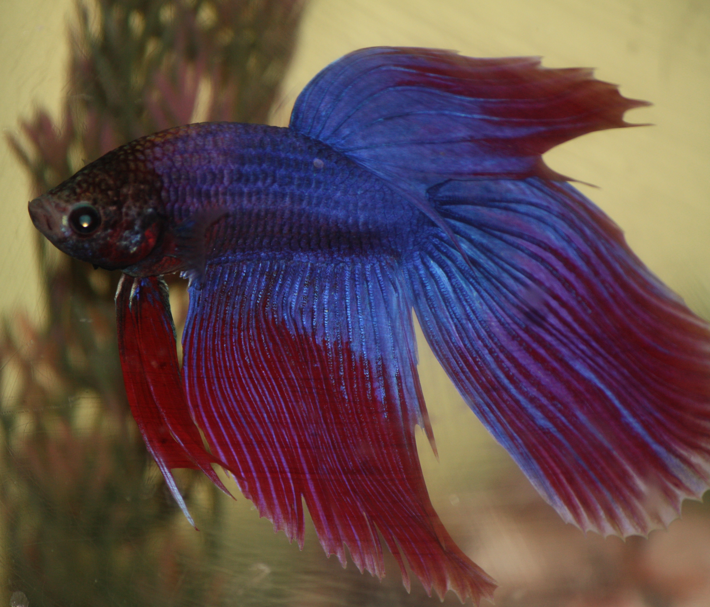

El Pez betta es un pez de agua dulce muy conocido por sus colores brillantes y aletas largas, comúnmente criado en acuarios.

• Pez pequeño de 6 a 7 cm. • Colores muy llamativos (rojo, azul, morado, etc.). • Aletas largas y elegantes. • Los machos son territoriales y agresivos. • Puede respirar aire gracias a su órgano laberinto.
El pez betta es originario del sudeste asiático y es muy popular como mascota en acuarios domésticos.